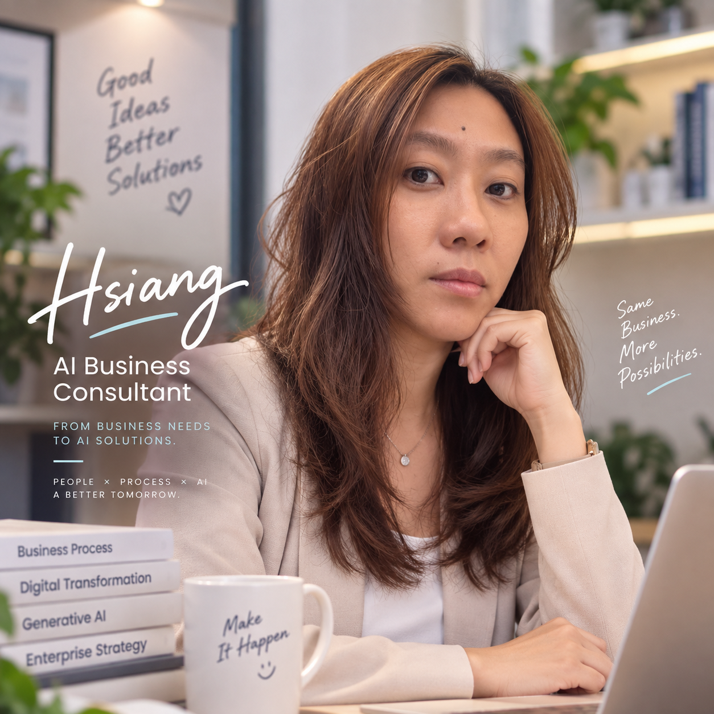

Enterprise Systems
Oracle ERP、ASCP、Demantra、WMS、Model N、GPO、採購與訂單管理。
AI Application Planner · ERP & Business Process Consultant
把企業流程痛點，轉化為可落地的 AI、ERP 與數位轉型解決方案。

01 / ABOUT
如何讓科技，
真正改善企業的工作方式？
我擁有超過 20 年 ERP、流程再造與企業系統導入經驗，工作橫跨採購、供應鏈、訂單管理、定價與全球營運。
現在，我將這些經驗延伸到 AI 應用規劃，探索企業知識管理、RAG、流程自動化與決策支援如何融入真實工作情境。
我能協助企業釐清痛點，轉化為結構化需求、工作流程與控制點，並規劃與既有系統相容、可驗證的數位解決方案。
了解我的 AI 發展方向02 / EXPERIENCE
從理解需求，到設計、建置、導入與持續改善。
Oracle ERP、ASCP、Demantra、WMS、Model N、GPO、採購與訂單管理。
分析業務流程、重整作業方式、設計控制點與改善使用者體驗。
全球專案協調、跨部門溝通、需求釐清與 UAT 規劃。
AI 應用規劃、RAG 概念、提示詞工作流程與 AI 輔助系統設計。
半導體
Senior Application Manager & Business Process Re-engineering Manager
2008 – 2025
全球系統與流程再造
主導全球 ERP、企業系統整合與跨國流程改善，帶領約 12 人團隊，串連營運需求與系統落地。
SOFTWARE
Engineer
Dec 2007 – Sep 2008
ERP 導入評估 × HRMS × 財務流程優化
電信
Engineer
Jul 2007 – Dec 2007
建立 O2C 流程基礎
維護 Oracle ERP OM / AR 與 Ares HRMS，累積電信產業的企業系統支援經驗。
製造／通訊
Senior Specialist
Mar 2003 – Jul 2007
從系統實作走向海外帶隊
企業系統導入與維護，涵蓋 HRMS、Oracle Fixed Assets（FA）、OM、AR 與 IBM QuickPlace。
釐清問題與成功條件
串連流程、資料與系統，定義控制點
用原型與使用者驗證，再持續改善
03 / BUILDING
透過實作，理解 AI 如何解決真實問題。
04 / THINKING
關於 AI、企業流程、系統思維與數位轉型的持續思考。
AI × Business Process
從二十多年 ERP 導入的經驗回頭看，凡是把新技術當成一次性專案，最後多半淪為系統孤島；把它當成日常工作方法的一部分，才會累積價值。AI 也一樣。
Systems Thinking
做 BPR 這些年，最常被問「怎麼精簡？」我更常反問：這個步驟是誰為了什麼在做決定？找到真正的控制點，效率才能持續，而不是靠一次性專案硬拉高。
Vibe Coding
自己動手做 RAG、寫 prompt、調 embedding，才知道哪裡是幻象、哪裡是真本事。這段實作經驗讓我在跟企業討論 AI 導入時，能更務實地判斷可行性與風險。
05 / KNOWLEDGE
Oracle ERP、企業系統與職場技術筆記，累積超過三百篇實務內容。從 2007 年寫到今天。
這些筆記是我理解企業系統如何真正運作的起點，也是今天做 AI 應用規劃時，判斷什麼可落地、什麼不可行的依據。
原始站於 2007 年開設於痞客邦，因排版限制已停止更新，內容持續搬遷至 LucidSource。 查看原始站 ↗